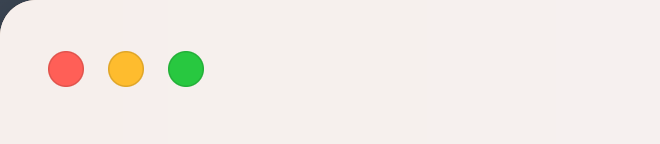
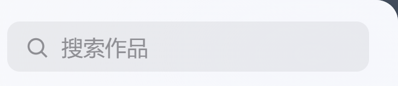
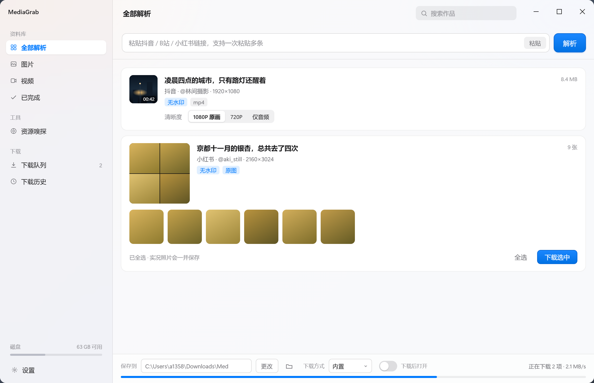
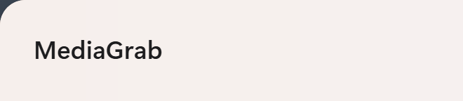
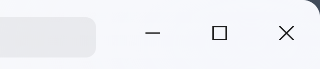

| 项目 | 改前 | 改后 | 依据 |
|---|---|---|---|
| 按钮位置 | 左上，侧栏顶部 | 右上，标题行末端 | Windows 用户的第一落点 |
| 命中区 | 12px 圆点 + 4px 热区 | 46 × 46 整块 | 不用瞄准；触摸屏可点 |
| 关闭态 | 红点颜色加深（同色系） | #C42B1C 底 + 字形转白 | WinUI 危险动作专用色 |
| 左上角 | 三个点，占 52 × 12 | 空出，放应用名 MediaGrab | 导航区不再被窗口控件打断 |
| 搜索框右距 | 16px | 154px（让出 138px） | 不压按钮命中区 |
| 最大化圆角 | 恒定 12px | 12 → 0，图标切成「还原」 | Win11 最大化后窗口是直角 |
| 拖动区 | 侧栏顶 224 × 46 | 标题行整条，扣除 138px 按钮 | 右手也能拖窗 |